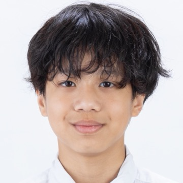

SBS Bangkok Celebrates Second Loy Krathong Festival


SBS Bangkok held its second Loy Krathong festival on Tuesday 24 November, with performances, game stalls and food.
The opening ceremony started off with a ระนาดเอก (ranaat ek) performance by Brabus (Year 6), followed by traditional Thai dances and modern hip-hop routines from Primary and Secondary students. The audience was clearly entertained. There were loud cheers from students, parents, and teachers, while many people in the audience filmed the day’s festivities on their phones.
After the opening ceremony, parents and students explored the activity stalls and food. Visitors played games such as lucky draws, ring tosses, and other challenges, all run by secondary students and staff members. Jasper (Year 5) said, “It’s pretty loud, but it’s fun as well.”
Mr. Crumbie (Secondary Principal) said his favorite part was “seeing everyone come together” along with the performances by the younger children and “the secondary girls and their dance performance which they choreographed together.”